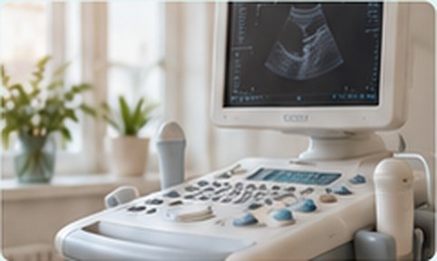

Акция
Приём гинеколога и УЗИ
Консультация акушера-гинеколога и ультразвуковое исследование в один визит.
Консультации, диагностика и лечение в одном центре

Актуальные условия и сроки уточняйте у администратора центра.
Консультация акушера-гинеколога и ультразвуковое исследование в один визит.

Ведение беременности и неинвазивный пренатальный тест с понятным планом наблюдения.

Консультация и массаж шейно-воротниковой зоны для тех, кто впервые пришёл к нам на массаж.

При покупке 9 сеансов массажа десятый — в подарок.

При курсе лечебного массажа от 7 процедур — обучение лечебной гимнастике в подарок.
В субботу к массажу любой зоны — 15 минут массажа лица в подарок.

К массажу спины 60 минут — массаж стоп или точечный массаж рук либо ног в подарок.
К косметическому массажу лица — иммуностимулирующий массаж кистей в подарок.
Комплексный подход, внимательные врачи и современное оборудование. Все направления →
Консультации, кольпоскопия, радиоволновая хирургия, ведение беременности.

Консультации, ботулинотерапия, инъекции Дипроспана.

Консультации врача-терапевта: первичный осмотр и план обследования.

Ультразвуковые исследования и функциональная диагностика.
Выберите направление, чтобы увидеть, что в него входит.
Путь пациента
Заявка или звонок — подберём удобное время
Осмотр и план обследования
УЗИ и исследования в том же центре
Процедуры и физиотерапия там же

4,9 — средняя оценка на 2ГИС. Отзывы приведены без изменений, имена сокращены.
Просто нет слов, просто все на таком высшем уровне!!! Все по делу, быстро, качественно. Врач Роговенко Елена Юрьевна - доктор от бога. Спасибо большое 🙏. Медсестры, врач, все очень внимательные к пациентам. Рекомендую 👍
 2ГИС
2ГИС😍Хочу выразить огромную благодарность за профессиональный подход и внимательное отношение! Врач подробно объясняет диагноз, отвечает на все вопросы. Никакой "воды" – только четкие рекомендации. Сервис – выше всяких похвал. Администраторы вежливые, на ресепшене быстро оформили документы. Никаких очередей – всё четко по времени. Везде чисто и уютно! Особенно порадовало, что после приема мне позвонили и уточнили, как я себя чувствую. Это редкость! Однозначно рекомендую!! Если хотите получить качественную медицинскую помощь без нервов, вам сюда. Спасибо за работу! 🙏
2ГИСЯ очень довольна качеством обслуживания в этом центре и самим доктором. Врач Старцева Марина Николаевна невероятно обаятельный человек и настоящий профессионал своего дела. Она очень грамотно оценила мою проблему и всё подробно рассказала. Я пришла с конкретным вопросом, а доктор максимально постаралась его решить.
2ГИСХочу поблагодарить персонал, врачей данного центра за чуткость, внимательность, профессионализм. Очень неравнодушные люди, помогают наладить здоровье. Само место чистое, с удобным расположением. Большое спасибо Вам!
2ГИСХочу выразить огромную благодарность за профессионализм и актуальность новых направлений в гинекологии цента . Так важно найти место , врача , где тебе бережно и главное профессионально решат вопросы женского здоровья . Елена Юрьевна , вам отдельный респект 👍
2ГИСПриём прошёл великолепно, Эра Маадыевна отличный и опытный специалист. Администратор оказался очень дружелюбным и внимательным человеком. В клинике комфортная атмосфера, и меня полностью устраивает качество обслуживания, поэтому собираюсь обратиться сюда ещё не один раз.
2ГИСПрекрасные, грамотные врачи! Все подробно расскажут, сориентируют, по настоящему с заботой. Очень выгодная акция на комплексное узи. Спасибо вам! Рекомендую.🙌🏻
2ГИСУже несколько лет посещаю приём у Марины Николаевны Старцевой и регулярно возвращаюсь именно к ней. Врач умеет устанавливать доверительный контакт, благодаря чему на консультациях ощущаю себя спокойно и уверенно. Профессионализм доктора заметен сразу, что вызывает желание продолжать лечение именно в её кабинете.
2ГИСГинеколог - очень грамотный специалист, всё подробно объяснила и ответила на все мои основные и дополнительные вопросы. Для меня в кабинете врача прежде всего важно вежливое отношение, здесь я его получила в полной мере. Сервис в центре тоже отличный: записываться было удобно, сначала делала это через интернет, а потом по телефону, на прием удалось попасть быстро.
2ГИСМне очень нравится профессионализм врачей в этом центре, теперь я наблюдаюсь только здесь. Татьяна Владимировна Ульянова настоящий профессионал, очень подробно рассказала про диагноз и ответила на все мои вопросы, даже более чем информативно.
2ГИСХожу в медицинский центр на УЗИ и остаюсь полностью довольна. Прежде всего хочу выделить крайне удобное местоположение возле моей работы и подходящие часы работы, которые дают возможность записываться на процедуры сразу по окончании рабочего дня. Запись проходит хорошо, попадаю к врачу быстро и никаких сложностей не возникает. Врачи работают отлично, разговаривают всегда вежливо и профессионально.
2ГИСХочу поделиться положительным опытом обращения в этот медицинский центр! Очень всё понравилось! Внимательные, вежливые сотрудники - врачи, медсестры и администраторы, профессионалы своего дела! Всё подробно объяснят,ответят на все вопросы, запишут на удобное время, всё делается быстро и четко, что даёт необходимые результаты! Спасибо!
2ГИСПришла в центр к гинекологу Елене Юрьевне, которая ведет меня уже не первый год. Врач действительно компетентный и я остаюсь полностью удовлетворена предоставляемыми услугами. Сотрудники центра встретили меня очень тепло, персонал демонстрирует доброжелательность уже с самого порога. Помещения содержатся в безупречной чистоте и находиться там комфортно.
2ГИСЗамечательная врач Елена Юрьевна🥰Всем советую❤️ Сама клиника очень чистая и уютная. Спасибо вам 🙌🏻 Желаю процветания!
2ГИСстаршая медсестра (к содержанию забыла имя) очень приятная женщина, всё сделала на высшем уровне. буду обращаться именно в этот центр за помощью🫶
2ГИСНапример: УЗИ, SVF, гинеколог, ЭКГ, массаж